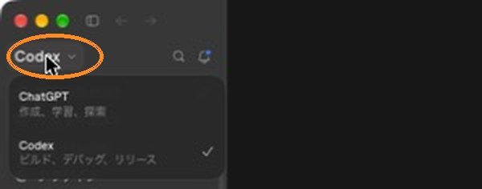
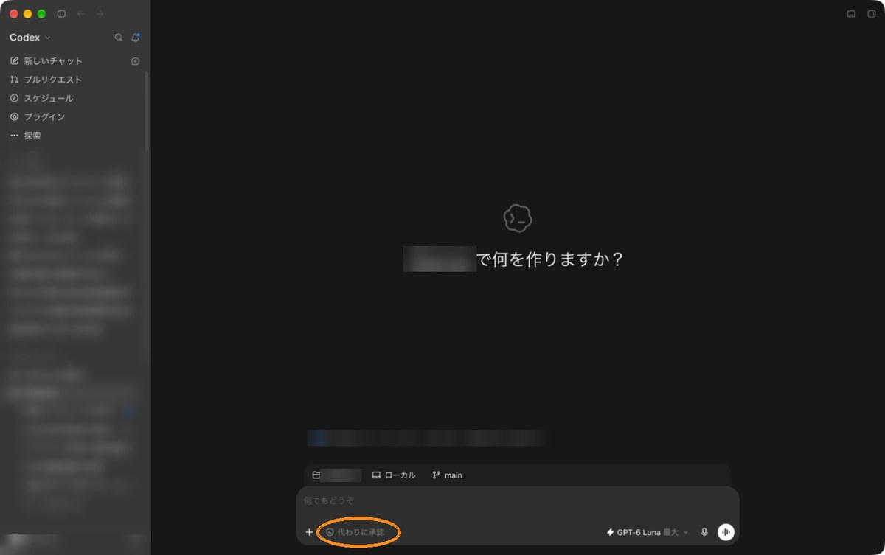

はじめてのAI講座、第1回です。……さっそくだけど、ChatGPTに最後に頼んだこと、なに？
え、わたし？ うーん……メールの文章を、やわらかく直してもらった、かな。
多くの人が、そこで止まってる。今日は、その先に1歩だけ行く。
渡邉さんが言うてはった「GPTワーク」な。実はそれ、もう入口に立ってはるんよ。
ChatGPTには、3つのモードがあります
「GPTワーク」は、ChatGPTアプリの中にある3つのモードの1つです。
渡邉さんの「GPTワーク」は、正式には「ChatGPT Work」。今のChatGPTのパソコン用アプリには、Chat・Work・Codexの3つが入ってる。
アプリが3つある、ってこと？
違う。アプリは1つ。お店で言えば、Chatは相談の窓口、Workは資料を仕上げる工房、Codexはパソコンの前に座って手を動かす職人さん。
{kind=link}

3つとも、同じChatGPTアプリの中にいます。
今夜の1個は、ダウンロードフォルダの片付けの計画です
頼むのは「計画を見せて」だけ。ファイルは、まだ1つも動きません。
最初の1個は、ダウンロードフォルダのお片付け。PDFとか画像とか、いつの間にかたまってるとこな。
パソコンの中を触られるのは、ちょっとこわいな。
今夜は計画だけ。表が出てくるだけで、ファイルは動かない。引っ越しの見積もりと同じで、運ぶのは見てから。
- ChatGPTのパソコン用アプリを入れて、サインインしますhttps://chatgpt.com/ja-JP/download/ から。サインインは自分で。
- 左上の名前を押して「Codex」を選びます上の画面の丸の所です。
- ダウンロードフォルダを開きますメニューの「ファイル」→「フォルダーを開く」から選びます。
- 権限は「承認を求める」にします入力欄の左下のボタンです（英語の画面では「Ask for approval」）。外に出る時は毎回「いい？」と聞いてくれます。
{kind=link}

準備ができたら、これをコピーして送る。
このフォルダ（ダウンロード）の中を見て、片付けの計画を立ててください。 ・今日は計画を見せてもらうところまでにしてください。移動・名前の変更・削除は、わたしが「OK」と言ってから始めてください。 ・何を、どのフォルダへ移す予定か、表で見せてください。 ・消してよさそうに見えるものも、消さずに「要確認」フォルダ行きにしてください。 ・最後に、全部で何個あって、どのフォルダに何個入る予定かを教えてください。
消してよさそうなものは、わたしが全部消しておく。
いやいや、それいちばんあかんやつ！ 移動だけって書いてあるやろ。
……冗談。表を見て良かったら、「OKです。計画どおりに、移動だけしてください。削除と上書きはしないでください」と返すだけ。
9/25に試しました。架空のファイル20個で送ると、1回目は表だけ。OKを返すと20個を移動して、消えたものは0個でした。
今夜は「計画を見せて」の1回だけ。ファイルはまだ動きません。
慣れてきたら、こんなこともできます
今夜はやらなくて大丈夫です。1行ずつだけ並べます
- ボイスモード入力欄の右端の白い丸を押して、話しかけるだけです。
- ブラウザでお店探し「予約画面の手前まで」と頼めば、最後のボタンは自分で押せます。
- GmailとGoogleカレンダーをつなぐ返事が要るメールや締切を、先に拾ってもらえます。
- Canvaをつなぐ「このアイデアをプレゼンにして」と頼むと、Canvaでデザインを作ってくれます。
つなぐのは、設定の「プラグイン」からです。くわしくは解説動画（Leo Tohyama / AIコーチ）がおすすめです。https://youtu.be/MuXoXCBlo98
おけもんさんは、実際どんなふうに使ってるの？
あくまで実例やけどな。いちばんおもろかったのを3つだけ。
パソコンで頼む操作は、慣れてきたら全部Codexが代わりにやってくれるようになるよ。
それでも、ログインと最後の1押しは、ずっと自分の手に残る。
……で。今日ずっと、何か言いたそうな顔してたけど。
え、わたし？ ……実はね。わたしのダウンロードフォルダ、ファイルが900個あるの。
900個！ 散らかってるどころやないやん。
だから今夜、1回目だけ送ってみる。渡邉さんも、よかったら一緒に。
次回のAIシェア会
2026年第2回では、話した中身を講座資料の骨組みにする流れを紹介する予定です。
詰まったら、Slackでいつでも聞いてください。ほな、またね。
2026年9月25日時点の情報です。画面や名前はよく変わるので、見当たらない時はChatGPT自身に「〇〇はどこ？」と聞いてみてください。
確かめた先：ChatGPT Workの発表 https://openai.com/ja-JP/index/chatgpt-for-your-most-ambitious-work/／Codexの権限 https://learn.chatgpt.com/docs/sandboxing／ブラウザ https://learn.chatgpt.com/docs/browser／音声会話 https://help.openai.com/en/articles/20001274-chatgpt-voice／アプリとプラグイン（Canvaの例もここ） https://help.openai.com/en/articles/11487775-connected-apps-in-chatgpt
おけもんのアイコン：あや＠ロロカデザインさん／動画のBGM：Carefree（Kevin MacLeod・CC BY 4.0）／まとめ：おけもんカンパニー（2026-09-25）